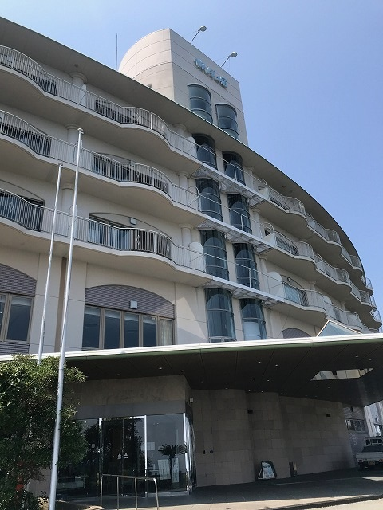

開催報告
またまた、たいへん遅くなってしまいましたが、第2回ハッカソンの開催報告を公開します。
第2回ハッカソンは、予定通り2018年7月15日（日）～7月20日（金）の足かけ6日間にわたって、徳島市の徳島大学 先端酵素学研究所（初日シンポジウム）とかんぽの宿 徳島（ハッカソン本体）で開催されました。
このハッカソンは（通常どおりの）日本バイオインフォマティクス学会(JSBi)に加えて、公益財団法人・加藤記念バイオサイエンス振興財団から助成金を頂いて実行することができました。
また、前回に引き続き今回も、情報・システム研究機構(ROIS)・データサイエンス共同利用基盤施設・ライフサイエンス統合データベースセンター(DBCLS)が実施する、「国内版バイオハッカソン（以下「BH」）BH18.7」と一体的に行いました。
ハッカソンの告知
今回のハッカソン開催にあたっては、バイオハッカソン側が自前のメーリングリストに、我々も同じくメーリングリストに告知を流した他、ワークショップのときと同様、以下の学会･団体のweb・SNS・メーリングリストなどに告知を掲載していただきました：
- 日本バイオインフォマティクス学会(JSBi)
- 日本質量分析学会(MSSJ)
- 日本プロテオーム学会(JPrOS/JHUPO)
- 情報処理学会(SIG-BIO)
- 日本分子生物学会
- 日本生化学会
- 日本生物物理学会
- 糖鎖インフォマティクス若手の会
- サイエンスポータル
- 文部科学省・ライフサイエンスの広場
- バイオインダストリー協会
- Mass++ユーザー会
参加者について
図中で、過去に一度でもDBCLSバイオハッカソンまたは第1回の質量分析インフォマティクス・ハッカソンに参加した経験のある人は、「参加経験者」に分類した。従って「参加非経験者」は「全くの新規参加者」。なお「バイオハッカソン(BH)側の参加者で、初参加の人」は、この「参加非経験者」の中にはカウントしていない。 或る参加者は過去にBHに参加していたが、2017年には質量分析側として参加し、今年は本務の関係でBHとして参加しているが、この場合2017年は青色の、今年は緑色のグループの一員としてカウントしている。
参加者数ですが、BH側の参加者が減少したために合計人数は若干減少していますが、質量分析インフォマティクス・ハッカソンとしては更に参加者が増加し、両ハッカソン合計67人中28人、実に4割強が本ハッカソンとしての参加者、ということになりました（なお参加日は人によって異なりますので、単純に「1日でも参加した人」を全て一人として、どちらかのハッカソンの参加者としてカウントしています）。
初日シンポジウム
昨年度は“ミーティング”として行った講演会を、今回は（もっと時間をかけて企画して）“（ミニ・）シンポジウム”として実施しました。会場は徳島大学先端酵素学研究所（蔵本キャンパス）の藤井節郎記念医科学センター。建物の外観は「ハッカソン会場への交通」ページの「初日シンポジウム会場」項からリンクしたGoogle Mapに埋め込んで ありますが、圧倒されるような威容です。
玄関扉、そしてすぐ内側には､シンポジウムのポスターが掲示されていました。


徳島への交通路は主に航空路（明石海峡大橋が鉄道を通せる仕様になっていないため、瀬戸大橋（児島～坂出ルート）経由だと四国北部の非電化区間を延々と移動する必要があるため、現実的ではないのです）､関西在住者のみ高速バス、というのが普通です。 幸い航空路は大きな遅延もなく、大多数の関係者は無事に到着したのですが、高速バスは殆ど1時間遅延し、開場時刻を過ぎて開始寸前に辛うじて会場に滑り込むスタッフも…（ってすみません、アタクシです）。
シンポジウムには最終的に、（講演者を含めて）42人が参加されました。これは（たまたま）前回と同じ人数なのですが、今回はフライト遅延などもなかったお蔭で、事前登録者は全員（直前に病欠したお一人以外）登録どおり参加されています。
この種の会合を、東京でなく徳島で行うことを考えると、42人という人数は非常に多数なのですが、会場の藤井ホールは非常に立派な設備かつ大人数収容であるため、ご覧のように微妙に「人口密度の低い」（「閑散とした」ともいう）状態になっていました（汗

なお当日の講演は撮影し、（DBCLSがYouTubeを使って公開している）「TogoTV（統合TV）」のコンテンツとして公開しています（前回、音声トラブルで公開できなかった“敵討ち”ができました。内容はほぼ同様の範囲をカバーしており、より詳細になっています）。
今回は（前回と異なって）講演会の後の「討論」時間は特に設けず、翌日の（バイオハッカソンと共同の）「課題出し」時間に任せることにしましたが、特に問題もなくスムーズにハッカソン本体も進行していたようです。
さてシンポジウムの後は、シンポジウム非参加者（バイオハッカソン側の一部）も含めたレセプションです。会場は徳島駅近くの阿波観光ホテルです。
ハッカソン本体を行う場所ではないのですが、交通の便がいいこと、懇親会用のパーティプランがあること、パーティ参加者は格安でその晩宿泊できる､という（多くの人が利用した）プランがあること

なおこの会合実施のために、前回に引き続き、情報・システム研究機構(ROIS)・データサイエンス共同利用基盤施設（DS施設）の公募型共同研究予算「ROIS-DS-JOINT 共同研究集会」に応募し、採択されたため、初日の会合のためにはこの予算も使用しています（ROIS-DS-JOINT(002RM2018)）。
またレセプション費用は参加者の実費負担でしたが、熊本国際観光コンベンション協会からDBCLSが取得した「コンベンション開催助成金」（用途無制限）も利用しています。レセプションの一部の料理や、レセプションとその後の夜に登場した地酒類（の一部）は、この予算によるものです（全額を地元で消費できました）。
ハッカソン本体

準備して…

ハックして！ （おや、温泉上がりで既に浴衣の人も…）

メシ食って…

打ち合わせして！（毎日のようにサブグループのミーティングも開かれていました）

晩飯食って…

でやっぱり飲むんかい＿|￣|○
…というわけで、皆さん大変盛り上がり、楽しんで、集中されていたのでした！
なお、DBCLS国内版バイオハッカソンと共通で、各参加者（のグループ）の簡単な作業報告をオンライン上にまとめ、公開しています。
https://tinyurl.com/bh17-11-slidesまだ数は少ないものの、ゲノム系研究者と質量分析系研究者のコラボレーションも幾つか発生しています。
さて、ここで得られた“結果”は、本当に“モノになって”いるのでしょうか？
これは評価が難しく、一概には言い切れません。しかしご覧になってお判りのように、既に一般的な発表に値するレベルの結果が得られているものも少なくありませんし、また例えば、筆者個人が（ちょっとだけ）関わっていて状況をよく知っているプロジェクトから例を挙げると、上記の公開作業報告にも記載されている「Mass++」の場合は、ここでの成果を踏まえて、今年2018年の ASMS（米質量分析学会）でのポスター発表を行うことになっています。
また、「研究会としての企画」が、このハッカソンを機に始まっています。
質量分析データの解析で最も標準的な方法は？初歩から勉強するのに適切な総説は？これこれしかじかの処理をしたいのだが、適切なソフトウェアはないのか？
こういった悩みは頻繁に生じると思いますが、現状では決定版といえるような資料は殆ど見当たりません。そこで、解析プロトコル、適切と思われる文献、ソフトウェアの情報などを収集し、また更に必要に応じて（オープンソースの）ソフトウェア自体をホストしよう、というのがこの企画の目標です。これは今後も年単位で継続し、情報を研究会のwebに集約していく予定です。会員の方、ご興味があれば是非、ご参加下さい！
学生参加者への旅費補助
この分野の（少なくとも、この分野に知識や関心のある）若手研究者を増加させることを（最終的な）目標として、学生に対する旅費の補助を行うことは、当初から計画していました。
「会場のホテルに宿泊する（＝相部屋なので、自動的にこの分野の知り合いができる）」こと（及び下に述べる他の条件）を条件として、4名に対して「交通費と宿泊費を支給する」 という方針で、更に幾つかの参加条件をつけました。
しかし結果的には、非常に残念なことに1名しか応募がありませんでした。この「学生参加人数」の問題は、今回の最大の問題であると考えています。
今後の課題
最後に、今後のハッカソンとその課題について、主催者としての認識を述べます。
- 企画自体
- 参加人数が多かったことからも、時宜を得た企画であったと考えています。また関係学会のメンバー（研究者）からも「良い企画だ」と歓迎の言葉をいただいています。従って同様の形態・企画を今後も継続する予定です。DBCLSとは、少なくとも2018年度も共同開催する方向で検討中です。
- 初日ミーティング
- 今年度は急遽立案したため短時間で荒削りの企画となりましたが、2018年度はより長い準備時間を使って、より大規模な会を企画しています。
- 学生への旅費補助
- 「学生参加者が少ない」ことは最大の課題であると考えていますが、この対策は難しい。「（世話人が）個人的によく知っている研究者」に声をかけて、潜在的な学生参加者を掘り起こしてもらうことはおそらく可能ですが、その場合は旅費補助の選定での公正性が問題になる危険があります。
このため、「より徹底した広報」と「（今回は全日程参加を義務づけたため）部分日程参加を認める」形にして条件を緩和する、夏期休暇や冬期休暇など、学生が参加しやすい時期に実施する、などの対応が必要と考えています。
今後の予定
4月23日には、今年のワークショップをJST本部（今年は今まで2回と違って、サイエンスプラザのある本館ではなく、K's五番町の別館です）で行います。 また第2回のハッカソンも準備中です。更に他の企画も進行中です。
また、早くも2019年のハッカソンの開催についてご提案を頂いており（嬉しい驚きですが、半ば“向こうから転がり込んで来た”状態で…）、企画が始まっています。皆様の積極的なご参加をお待ちしています。
世話人： 吉沢 明康 （京都大学大学院薬学研究科）
河野 信 （ライフサイエンス統合データベースセンター）
守屋 勇樹 （ライフサイエンス統合データベースセンター）
Page Last Updated: Feb. 24, 2019